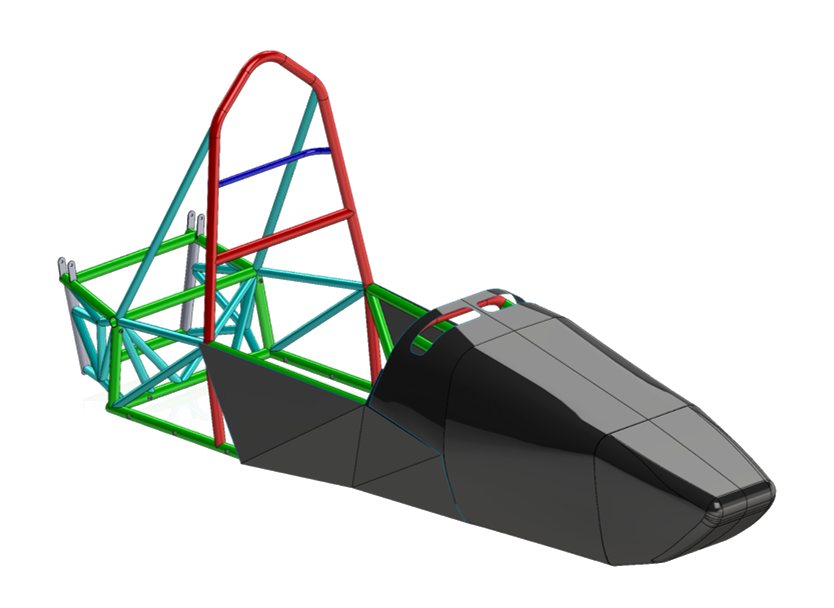
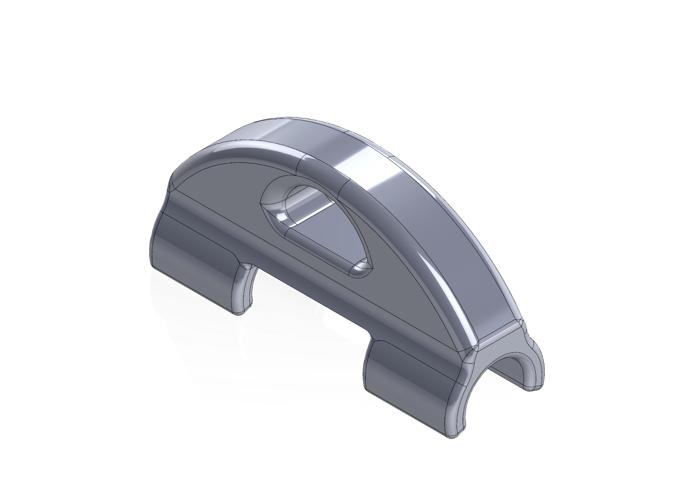
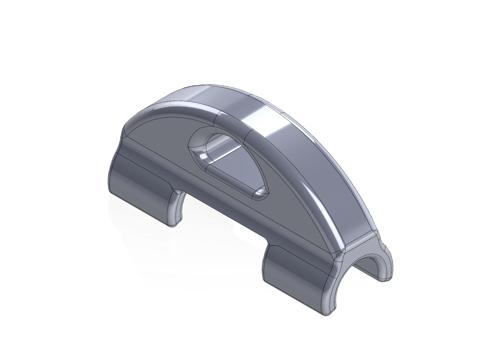
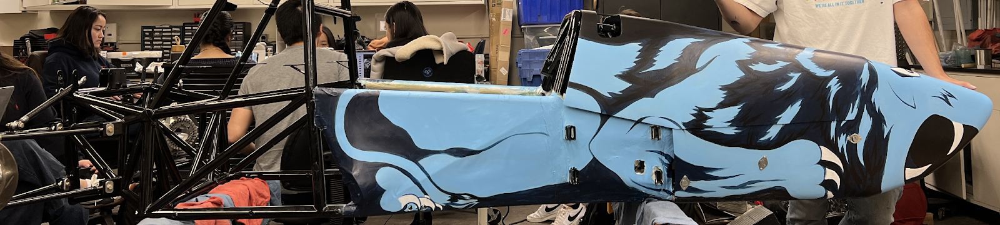

As Body Subteam Lead for Columbia Formula SAE, I oversaw a full redesign of the 2024 EV bodywork package.
Our priorities were reducing weight, improving airflow around the nosecone, and eliminating ground-scrape risk under dynamic ride conditions.
Beyond the technical work, I focused on building an excited and supportive subteam culture—creating an environment where newer members felt comfortable asking questions, taking ownership of parts, and contributing meaningfully to the final car.
I designed and fabricated key mounting and integration hardware to support the new lightweight body system.
(Left) A custom chassis tab enabling secure nosecone attachment.
(Right) A 3D-printed fabric tensioning guide that simplified Dacron application while maintaining clearance for electrical routing.
 


I led the CAD redesign of the nosecone geometry to better match the chassis envelope and improve aerodynamic performance.
Working closely with the Aerodynamics team, we ran CFD studies to evaluate contour effects, reduce frontal drag, and direct airflow toward the rear radiator inlets.
To achieve a major weight reduction, I transitioned the side panels from traditional carbon fiber to Dacron aircraft fabric.
This required extensive prototyping and validation—researching adhesives, refining application processes, and conducting trial installations to ensure the fabric maintained stiffness, durability, and a clean finish under racing conditions.
These design decisions were presented through advisor-led design reviews to secure approval for external manufacturing of the new nosecone.

As Body Lead, I guided members through the full design-to-validation pipeline, ensuring all bodywork remained rules compliant and competition-ready.
I coordinated testing and fit checks, supported manufacturing of mounting features and electrical inlets, and worked directly with external companies to produce and finish composite components.
I also managed the vehicle livery process, collaborating with an external artist from another university to execute a cohesive final design.
This role strengthened my ability to lead multidisciplinary teamwork and maintain accountability across long timelines.